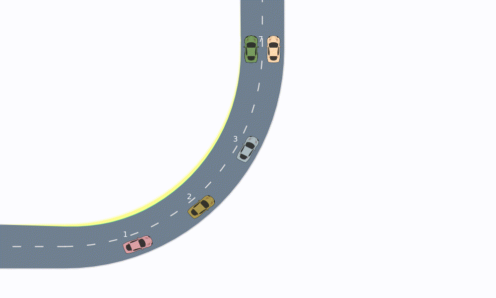
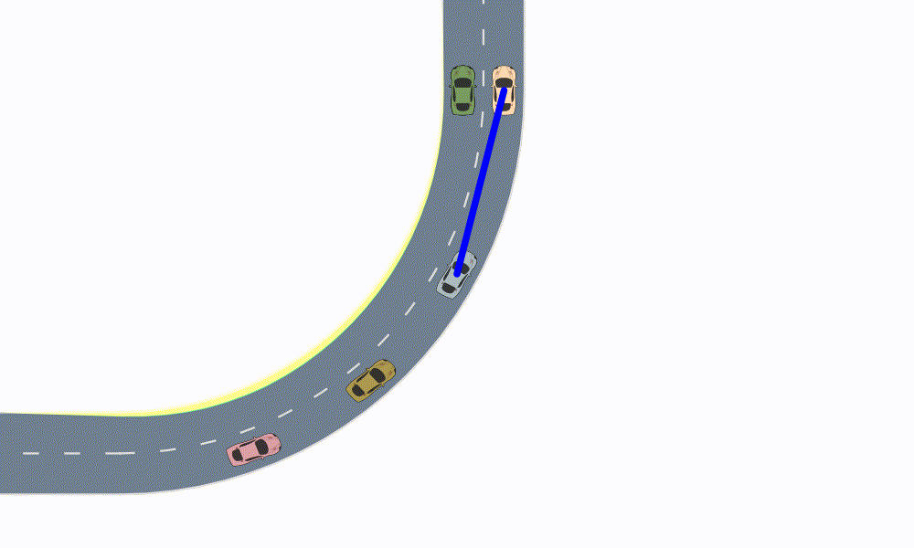
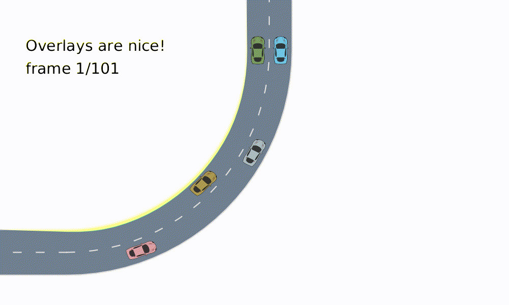
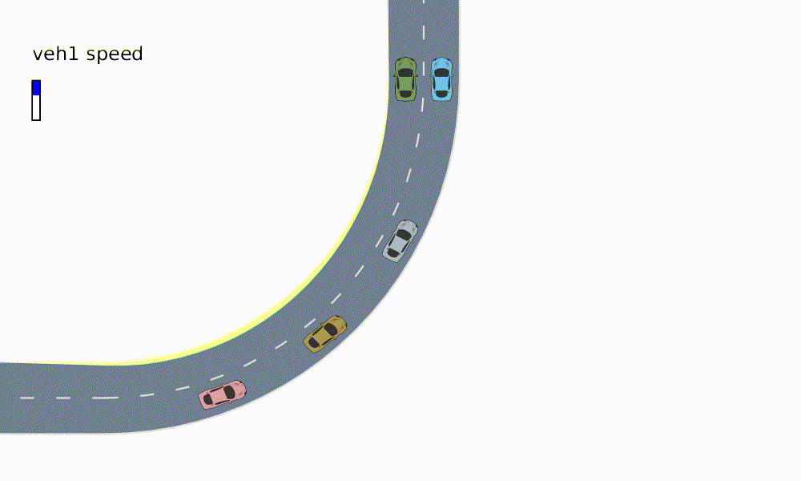
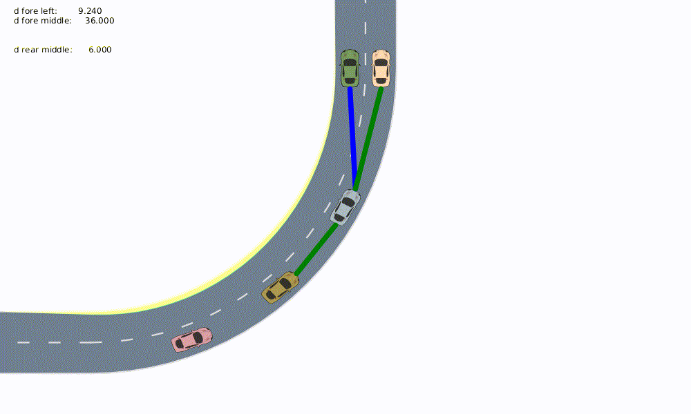
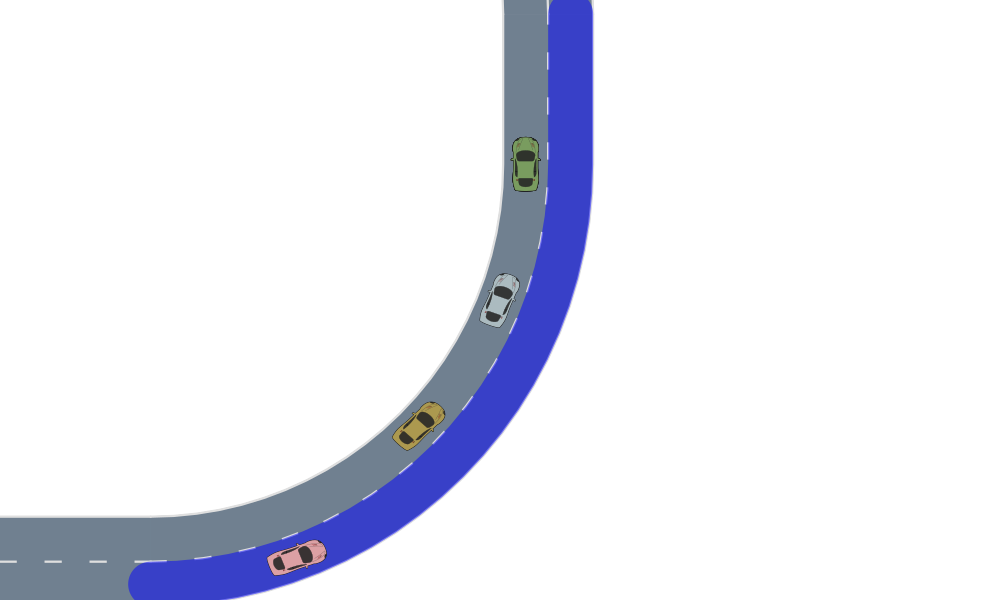

Overlays

Overlays are useful to display additional information on top of a given driving scene. For example, they can be used to display the ID of the vehicle, their speed, or other useful information.
More generally, renderable objects that are passed to the render function are rendered in the order they are passed in. For example, if we pass a collection consisting of a roadway and a scene, the roadway is rendered first, and the scene is rendered on top of the roadway.
This behavior leaves the possibility to create overlays as well as "underlays" that may be drawn under the vehicles.
In this tutorial, we will use the same stadium scenario as shown in the camera example.
using AutomotiveDrivingModels
using AutoViz
AutoViz.set_render_mode(:fancy)
nlanes = 2
nveh = 8
nticks = 100
timestep = 0.1
roadway = gen_stadium_roadway(nlanes)
scene = Scene([
Entity(
VehicleState(
Frenet(roadway[LaneTag(1,rand(1:nlanes))], 10.0*i), # position
roadway, 4.0 + 2.0rand() # speed
),
VehicleDef(), i
) for i in 1:nveh
])
models = Dict((
i => LatLonSeparableDriver(ProportionalLaneTracker(), IntelligentDriverModel())
for i in 1:nveh
))
set_desired_speed!.(values(models), 8.0 .+ 4.0rand(nveh))
scenes = simulate(scene, roadway, models, nticks, timestep)The following code will help us to animate the simulation using Reel
using Reel
function animate(roadway, scenes, overlays, camera=TargetFollowCamera(3, zoom=15.))
animation = roll(fps=1.0/timestep, duration=nticks*timestep) do t, dt
i = Int(floor(t/dt)) + 1
update_camera!(camera, scenes[i])
renderables = [
roadway, scenes[i], overlays[i]...
]
render(renderables, camera=camera)
end
return animation
endThe animate function defined above takes an overlays object which holds a list of overlays for every frame in scenes.
Note on compatibility: The interface for rendering overlays has changed in version 0.8 of AutoViz. In older versions of AutoViz, overlays were rendered by passing in the current scene and roadway explicitly. Since AutoViz 0.8, every renderable object must have the same interface. As a result, an overlay that requires the roadway or scene for rendering, must store those objects as internal variables.
(AutoViz.RenderableOverlay is an overlay that can be used as a wrapper around older overlays which rely on the scene and roadway objects. However, it is recommended that overlays implement the new interface for add_renderable! since AutoViz.RenderableOverlay may be removed in future versions.)
IDOverlay
Show IDs for all vehicles in the scene
overlays = [[
IDOverlay(scene=scene, x_off=-2, y_off=1)
] for scene in scenes]
animation = animate(roadway, scenes, overlays)"stadium_id_overlay.gif"
CarFollowingStatsOverlay
Diplays info about the front neighbor of a car such as the difference in velocity and the relative distance. Show statistics for vehicle 3:
TODO: overlay name is not very descriptive
overlays = [[CarFollowingStatsOverlay(
scene=scene, roadway=roadway, target_id=3, font_size=20, color=colorant"black"
)] for scene in scenes]
animation = animate(roadway, scenes, overlays)"stadium_car_stats_overlay.gif"LineToFrontOverlay
Show the line to the front vehicle for vehicle 3
overlays = [[
LineToFrontOverlay(scene=scene, roadway=roadway, target_id=3)
] for scene in scenes]
animation = animate(roadway, scenes, overlays)"stadium_line_front_overlay.gif"
TextOverlay
The TextOverlay displays some text at the desired location. By default, the coordinates are in camera pixels.
overlays = [[TextOverlay(
text=["Overlays are nice!", "frame $(i)/$(length(scenes))"],
font_size=30, pos=VecE2(50.0, 100.0), color=colorant"black",
coordinate_system=:camera_pixels
)] for i in 1:length(scenes)]
animation = animate(roadway, scenes, overlays)"stadium_text_overlay.gif"
setting the coordinate_system keyword to :scene places the text in scene coordinates
overlays = [[TextOverlay(
text=["Scene Coordinates!"],
font_size=10+round(20cos(.01i)),
pos=VecE2(2i, 40+round(20*sin(.002i))),
color=colorant"black", coordinate_system=:scene
)] for i in 1:length(scenes)]
animation = animate(roadway, scenes, overlays)"stadium_moving_text_overlay.gif"HistogramOverlay
Display a bar at the specified position pos. The bar has dimensions width and height and is filled up to a given proportion of its height. The fill proportion is set using val, which should be a number between 0 and 1. If it is 0, the bar is not filled, if it is 1 it is filled to the top. The default units are in the camera frame.
max_speed = 14.0
overlays = [[HistogramOverlay(
pos=VecE2(40.0, 100.0), val=get_by_id(scene, 1).state.v/max_speed, label="veh1 speed",
fill_color=colorant"blue", line_color=colorant"black",
font_size=24, width=10, height=50
)] for scene in scenes]
animation = animate(roadway, scenes, overlays)"stadium_histogram_overlay.gif"
NeighborsOverlay
Draws a line between a vehicle and its neighbors.
overlays = [[
NeighborsOverlay(
scene=scene, roadway=roadway, target_id=3,
textparams=TextParams(color=colorant"black")
)
] for (i, scene) in enumerate(scenes)]
animation = animate(roadway, scenes, overlays)"neighbors_overlay.gif"
Custom Overlays
Lane Highlighting
Just like roadways and vehicles, overlays are renderable objects. In order to make a custom overlay type renderable, one needs to implement the add_renderable!(::RenderModel, ::YourOverlay) function.
To define an overlay which highlights a lane, let's start by defining a custom type LaneOverlay
struct LaneOverlay
lane::Lane
roadway::Roadway
color::Colorant
end
function AutoViz.add_renderable!(rendermodel::RenderModel, overlay::LaneOverlay)
add_renderable!(rendermodel, overlay.lane, overlay.roadway, color_asphalt=overlay.color)
return rendermodel
endWe can now initiate a LaneOverlay object and pass it to the render function
lane_overlay = LaneOverlay(roadway[LaneTag(1,1)], roadway, RGBA(0.0,0.0,1.0,0.5))
camera = TargetFollowCamera(3, zoom=15.)
update_camera!(camera, scene)
snapshot = render([roadway, lane_overlay, scene], camera=camera)
write("stadium_lane_overlay.svg", snapshot)
Concentric Rectangle Overlay
In the following, we will show a more advanced example in which direct manipulation of the CairoContext is required. We will create an overlay which draws concentric rectangles around a vehicle with ID target_id
struct ConcentricRectOverlay
target_id
scene::Scene
n::Int64
color::Colorant
endWe implement a new rendering function for concentric rectangles
using Cairo
function render_concentric_rects(
ctx::CairoContext,
n::Int,
x::Real, y::Real,
w::Real, l::Real,
yaw::Real,
color::Colorant
)
save(ctx)
translate(ctx, x, y)
rotate(ctx, yaw)
for i in 1:n
AutoViz.render_round_rect(
ctx,
0, 0, l+2(i-1), w+2(i-1), 1., (i-.5),
RGBA(color.r, color.g, color.b, 1-i/n),
true, false,
)
end
restore(ctx)
endThe add_renderable function adds the function defined above to the instruction stack of the render model via add_instruction!. A series of common rendering instructions are already implemented as part of the AutoViz.jl framework.
function AutoViz.add_renderable!(rendermodel::RenderModel, overlay::ConcentricRectOverlay)
veh = get_by_id(overlay.scene, overlay.target_id)
x, y, yaw = posg(veh)
w, l = AutomotiveDrivingModels.width(veh.def), length(veh.def)
add_instruction!(
rendermodel, render_concentric_rects,
(overlay.n, x, y, w, l, yaw, overlay.color)
)
return rendermodel
end
concentric_rect_overlay = ConcentricRectOverlay(3, scene, 5, colorant"green")
snapshot = render([roadway, concentric_rect_overlay, scene], camera=camera)
write("stadium_concentric_rect_overlay.svg", snapshot)
nothingThis page was generated using Literate.jl.